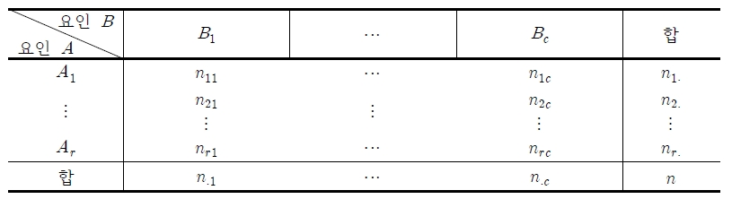
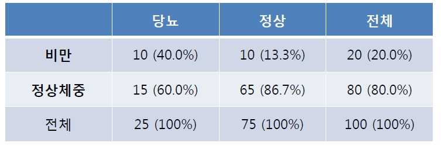
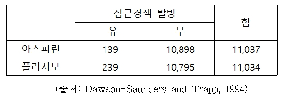
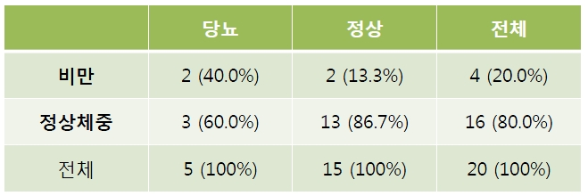
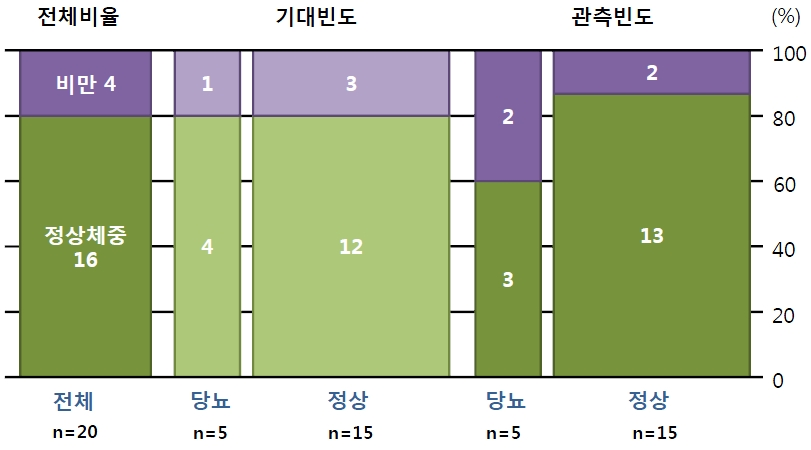
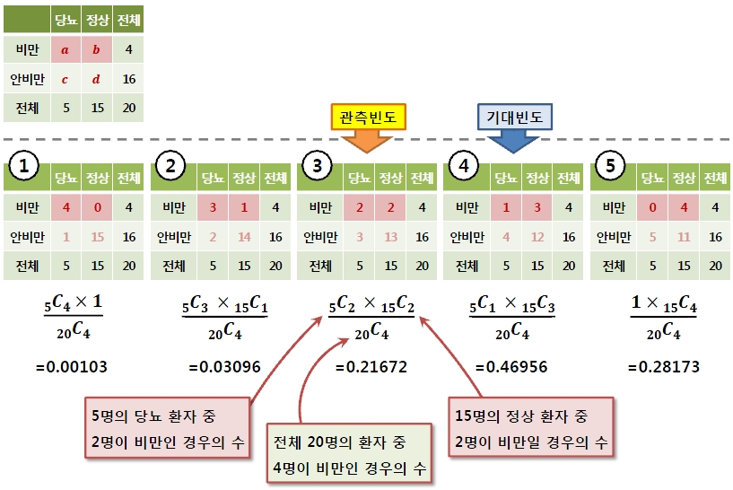
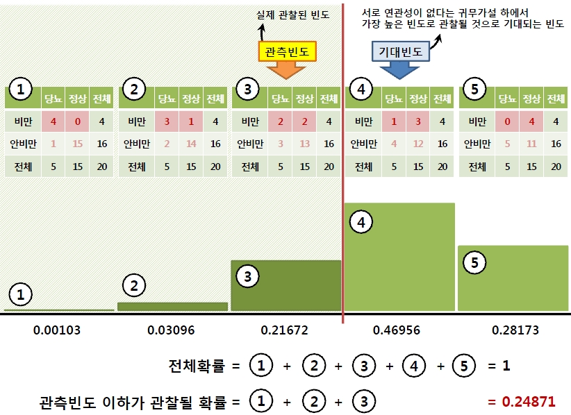
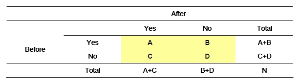
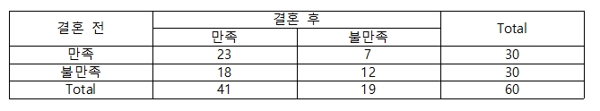
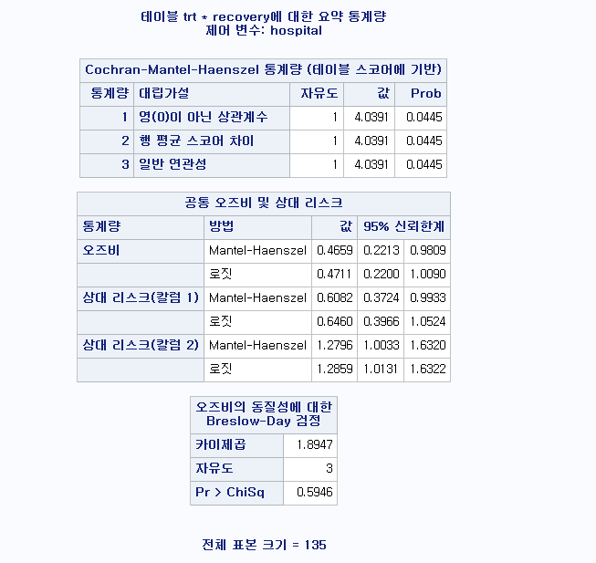

Chapter 4 분할표 검정
두 범주형(명목형, 순서형) 변수간의 연관 관계(association)를 볼 때 분할표(교차표)를 작성하여 변수들간 관계를 분석
독립성 검정, 동질성 검정, 교차 분석 혹은 카이제곱검정(chi-square test) 이라고 함
분할표(교차표)의 의미는 두 변수의 빈도 표(frequency table)를 교차시켰다는 의미이며, 교차 분석에 사용되는 검정 통계량이 \(\chi^2\) 분포를 따르기 때문에 카이제곱검정이라 함
교차표(cross-tabulation, 분할표: contingency table)는 각 범주형 변수에 대한 빈도표를 행과 열로 결합시켜 놓은 형태
일반적으로 분할표는 행에는 설명(독립) 변수에 해당되는 변수를 열에는 반응(종속) 변수를 놓음
\(r \times c\) 분할표

변수 \(A: r\)개 범주, 변수 \(B: c\)개 범주
전체 \(n\)회의 독립적인 실험을 반복 결과 \(A\)의 \(i\)번째 범주와 \(B\)의 \(j\)번째 범주에 속하는 시행횟수는 \(n_{ij}(i=1,\ldots,r, j=1,\ldots,c)\), \(n_{i.}=\sum_{j=1}^cn_{ij}\), \(n_{.j}=\sum_{i=1}^rn_{ij}\), \(n=\sum_{i=1}^rn_{i.}=\sum_{j=1}^cn_{.j}\).
\(A\)의 \(i\)번째 범주와 \(B\)의 \(j\)번째 범주의 결과가 발생할 확률은 \(p_{ij}(i=1,\ldots,r, j=1,\ldots,c)\), \(p_{i.}=\sum_{j=1}^cn_{ij}\), \(p_{.j}=\sum_{i=1}^rp_{ij}\), \(1=\sum_{i=1}^rp_{i.}=\sum_{j=1}^cp_{.j}\).
4.1 상대위험률과 오즈비
요인과 결과가 각각 두 개의 범주로 나누어진 분할표 (\(2\times 2\) contingency table) 자료의 경우, 연관성을 나타내는 측도로서 주로 사용되는 것은 상대 위험률(relative risk)과 오즈비(odds ratio, 교차비)임
\(2\times 2\) 분할표
| 그룹 / 결과 | 1 | 2 | |
|---|---|---|---|
| 1 | \(n_{11}(p_{11})\) | \(n_{12}(p_{12})\) | \(n_{1+}(p_{1+})\) |
| 2 | \(n_{21}(p_{21})\) | \(n_{22}(p_{22})\) | \(n_{2+}(p_{2+})\) |
| \(n_{+1}(p_{+1})\) | \(n_{+2}(p_{+2})\) | \(n\) |
Let \(X\): row classification variable and \(Y\): column classification variable.
4.1.1 상대위험률
- 상대위험률(Relative Risk: RR)
\[RR=\frac{\text{실험군에서의 위험률}}{\text{대조군에서의 위험률}}= \frac{\pi_{1|1}}{\pi_{1|2}}=\frac{\pi_{11}/\pi_{1+}}{\pi_{21}/\pi_{2+}}\]
- 상대위험률 추정량
\[ \hat{RR} = \frac{n_{11}/n_{1+}}{n_{21}/n_{2+}} \]
Note: \(RR=1\) then \(X\) and \(Y\) are independent
상대위험률은 \(\{n_{1+}\}\)와 \(\{n_{2+}\}\)처럼 행 합계가 고정(fixed)된 코호트 연구(cohort study)나 실험군과 대조군이 사전에 정해지고 난 후 그 결과를 관찰하게 되는 임상시험(clinical trials) 연구에서 사용됨
상대위험률의 신뢰구간
\(log RR\)의 \(100(1-\alpha)\%\) 신뢰구간: \((log\hat{RR}-z_{\alpha/2}\hat{\sigma}(log\hat{RR}),log\hat{RR}+z_{\alpha/2}\hat{\sigma}(log\hat{RR}))\)
여기서 \(z_{\alpha/2}\)는 정규분포의 상위 \({\alpha/2}\)에 해당하는 임계값, \(\hat{\sigma}^2(log\hat{RR})\)은 \(log\hat{RR}\)의 분산추정량임
\(log\hat{RR}\)의 분산추정량
\[ \hat{\sigma}^2(log\hat{RR})=\frac{1-n_{11}/n_{1+}}{n_{1+}}+\frac{1-n_{21}/n_{2+}}{n_{21}}=\frac{1}{n_{11}}-\frac{1}{n_{1+}}+\frac{1}{n_{21}}-\frac{1}{n_{2+}} \]
따라서 \(RR\)의 \(100(1-\alpha)\%\) 신뢰구간은 \(logRR\)의 신뢰구간의 상한과 하한에 exp를 취하면 됨
예제) 소량의 아스피린(aspirin) 복용이 심장병으로 인한 위험을 줄이는 데 효과가 있는지를 알아보고자 하였다. 22,071명의 남성을 확률화를 통해 두 그룹으로 나눈 후, 한 그룹에는 저용량(325 mg/일)의 아스피린을 복용시키고 다른 그룹에는 플라시보(placebo)를 복용하게 한 후 약 60개월간 관찰하여 심근경색(myocardial infarction)을 일으키는지 여부를 관찰하였다. 아스피린의 복용여부와 심근경색간의 연관성이 어느 정도인지 알아보자.
| 그룹 / 결과 | MI Yes | MI No | |
|---|---|---|---|
| Aspirin | 139 | 10,898 | 11,037 |
| Placebo | 239 | 10,795 | 11,034 |
풀이) \[ \hat{RR}=\frac{139/11037}{239/11034}=\frac{0.0126}{0.0217}=0.581 \]
The proportion suffering heart attacks was 0.58 times higher for those taking aspirin than for those taking placebo. That is, the proportion suffering heart attacks was 1.72 times higher for those taking placebo than for those taking aspirin.
library(epitools)
aspirin <- matrix(c(10795,10898,239,139),nrow=2)
riskratio.wald(aspirin)## $data
## Outcome
## Predictor Disease1 Disease2 Total
## Exposed1 10795 239 11034
## Exposed2 10898 139 11037
## Total 21693 378 22071
##
## $measure
## risk ratio with 95% C.I.
## Predictor estimate lower upper
## Exposed1 1.0000000 NA NA
## Exposed2 0.5814319 0.4725282 0.7154346
##
## $p.value
## two-sided
## Predictor midp.exact fisher.exact chi.square
## Exposed1 NA NA NA
## Exposed2 1.858802e-07 1.878482e-07 2.09472e-07
##
## $correction
## [1] FALSE
##
## attr(,"method")
## [1] "Unconditional MLE & normal approximation (Wald) CI"4.1.2 오즈비
오즈비(Odds ratio, OR, 승산비, 교차비)
\[OR=\frac{\text{처리 그룹에서 사건 발생 확률/처리 그룹에서 사건이 발생하지 않을 확률}}{\text{대조 그룹에서 사건 발생 확률/대조 그룹에서 사건이 발생하지 않을 확률}}\]
오즈(odds)
\[\frac{\text{처리 그룹에서 사건 발생 확률}}{\text{처리 그룹에서 사건이 발생하지 않을 확률}}\]
그룹 1에서 2열에 대한 1열의 발생 odds는 \(\Omega_1 = \pi_{1|1}/\pi_{2|1}=\frac{\pi_{11}/\pi_{1+}}{\pi_{12}/\pi_{1+}}=\pi_{11}/\pi_{12}\)
그룹 2의 odds는 \(\Omega_2 = \pi_{1|2}/\pi_{2|2}=\pi_{21}/\pi_{22}\)
Odds Ratio (OR)
\[ OR = \Omega_1 / \Omega_2 = \frac{\pi_{11}/\pi_{12}}{\pi_{21}/\pi_{22}} \]
- 오즈비 추정량
\[ \hat{OR}=\frac{n_{11}/n_{12}}{n_{21}/n_{22}}=\frac{n_{11}n_{22}}{n_{12}n_{21}} \]
Note: \(OR=1\) then \(X\) and \(Y\) are independent
오즈비는 사례-대조 연구(case-control study)에서 이용 됨
\(1<OR<\infty\): subjects in row 1 are more likely to make the first response than are subjects in row 2.
\(OR=4\): the odds of the first response are four times higher in row 1 than in row 2.
\(0<OR<1\): the first response is less likely in row1 than in row 2.
상대위험률과 오즈비
\[ OR = RR(\frac{1-\pi_{1|2}}{1-\pi_{1|1}}) \]
\(OR \approx RR\) whenever the probability of response 1 is colose to zero for both groups.
- 오즈비의 신뢰구간
\(log OR\)의 \(100(1-\alpha)\%\) 신뢰구간: \((log\hat{OR}-z_{\alpha/2}\hat{\sigma}(log\hat{OR}),log\hat{OR}+z_{\alpha/2}\hat{\sigma}(log\hat{OR}))\)
여기서 \(z_{\alpha/2}\)는 정규분포의 상위 \({\alpha/2}\)에 해당하는 임계값, \(\hat{\sigma}^2(log\hat{OR})\)은 \(log\hat{OR}\)의 분산추정량임
\(log\hat{OR}\)의 분산추정량
\[ \hat{\sigma}^2(log\hat{OR})=\frac{1}{n_{11}}+\frac{1}{n_{12}}+\frac{1}{n_{21}}+\frac{1}{n_{22}} \]
따라서 \(OR\)의 \(100(1-\alpha)\%\) 신뢰구간은 \(logOR\)의 신뢰구간의 상한과 하한에 exp를 취하면 됨
예제) 다음은 심장발작을 일으킨 환자와 그렇지 않은 사람들을 각각 214명씩 조사하여 그들이 과거에 약물남용을 한 경력이 있는지 여부를 조사한 사례-대조 연구로부터 얻은 자료이다. 약물남용과 심장발작의 연관성이 어느 정도인지 알아보자.
| 그룹 / 결과 | 심장발작 Yes | 심장발작 No |
|---|---|---|
| 약물남용 Yes | 73 | 18 |
| 약물남용 No | 141 | 196 |
| 214 | 214 |
풀이)
약물남용인 그룹에서의 심장발작이 일어날 odds는 73/18=4.06이다. odds 4.06의 의미는 약물남용그룹에서 심장발작이 일어나지 않은 100명에 대해 심장발작이 발생한 사람은 406명이 된다는 것이다. There were 406 “yes” (i.e., MI) outcomes for every 100 “no” outcomes.
약물남용하지 않은 그룹에서의 심장발작이 일어날 odds는 141/96=0.719. 마찬가지로 odds 0.719의 의미는 약물남용하지 않은 그룹에서 심장발작이 일어나지 않은 100명에 대해 심장발작이 발생 한 사람은 71.9명이 된다는 것이다. 따라서 OR=4.06/0.719=5.64이다.
\[ \hat{RR}=\frac{73/18}{141/196}=\frac{73\times 196}{18\times 141}=5.64 \]
#library(epitools)
oddsr <- matrix(c(196,18,141,73),nrow=2)
oddsratio.wald(oddsr)## $data
## Outcome
## Predictor Disease1 Disease2 Total
## Exposed1 196 141 337
## Exposed2 18 73 91
## Total 214 214 428
##
## $measure
## odds ratio with 95% C.I.
## Predictor estimate lower upper
## Exposed1 1.00000 NA NA
## Exposed2 5.63751 3.222266 9.863094
##
## $p.value
## two-sided
## Predictor midp.exact fisher.exact chi.square
## Exposed1 NA NA NA
## Exposed2 3.393463e-11 5.794293e-11 8.164427e-11
##
## $correction
## [1] FALSE
##
## attr(,"method")
## [1] "Unconditional MLE & normal approximation (Wald) CI"예제) 다음은 당뇨 환자 \(25\)명과 당뇨가 없는 정상인 \(75\)명을 대상으로 비만 유무를 조사한 결과이다. 비만과 정상 체중에 대해 당뇨의 상대위험률과 오즈비를 산출하라.

4.1.3 With R
#library(epitools)
example <- matrix(c(65,10,15,10),nrow=2)
riskratio.wald(example)## $data
## Outcome
## Predictor Disease1 Disease2 Total
## Exposed1 65 15 80
## Exposed2 10 10 20
## Total 75 25 100
##
## $measure
## risk ratio with 95% C.I.
## Predictor estimate lower upper
## Exposed1 1.000000 NA NA
## Exposed2 2.666667 1.416591 5.019874
##
## $p.value
## two-sided
## Predictor midp.exact fisher.exact chi.square
## Exposed1 NA NA NA
## Exposed2 0.007513782 0.007783054 0.003892417
##
## $correction
## [1] FALSE
##
## attr(,"method")
## [1] "Unconditional MLE & normal approximation (Wald) CI"oddsratio.wald(example)## $data
## Outcome
## Predictor Disease1 Disease2 Total
## Exposed1 65 15 80
## Exposed2 10 10 20
## Total 75 25 100
##
## $measure
## odds ratio with 95% C.I.
## Predictor estimate lower upper
## Exposed1 1.000000 NA NA
## Exposed2 4.333333 1.530248 12.27107
##
## $p.value
## two-sided
## Predictor midp.exact fisher.exact chi.square
## Exposed1 NA NA NA
## Exposed2 0.007513782 0.007783054 0.003892417
##
## $correction
## [1] FALSE
##
## attr(,"method")
## [1] "Unconditional MLE & normal approximation (Wald) CI"4.2 독립성 검정
두 범주형 변수간 독립인지 아닌지(연관성이 있는지 없는지)를 살펴보는 검정을 독립성 검정(test of independence)이라 함
\(p_{ij}\)를 한 관측값이 범주 \((A_i, B_j)\)에 속할 확률이라 하고, \(p_{i.}\)을 한 관측값이 변수 \(A\)의 \(i\)번째 범수에 속할 주변확률, \(p_{.j}\)를 변수 \(B\)의 \(j\)번째 범수에 속할 주변확률이라고 하면, 확률이론에 의해 두 변수 \(A\)와 \(B\)가 독립일 필요충분조건은 모든 \((i,j)\)쌍에 대해 \(p_{ij}=p_{i.}p_{.j}\) 임
독립성 검정 가설
\(H_0 : p_{ij}=p_{i.}p_{.j},\quad i=1,\ldots,r,\quad j=1,\ldots,c\) (두 변수는 독립이다)
\(H_1 : p_{ij} \ne p_{i.}p_{.j},\quad i=1,\ldots,r,\quad j=1,\ldots,c\) (두 변수는 연관성이 있다)
검정 통계량 \[T=\sum_{i=1}^r\sum_{j=1}^c \frac{(n_{ij}-\hat{e}_{ij})^2}{\hat{e}_{ij}}\sim \chi^2((r-1)(c-1))\]
여기서 \(\hat{e}_{ij}=n_{i.}n_{.j}/n\)이며, 이를 추정된 기대빈도(expected frequency)라 함
검정통계량의 의미 : 만약 두 변수가 독립이라면 기대빈도 \(e_{ij}\)는 관측빈도 \(n_{ij}\)와 같아야하고 \(T\) 값은 \(0\)이 되어야 함. 즉 \(T\)가 \(0\)에 가까우면 두 변수는 관계가 없다고 결론 내릴 수 있음
기각역 \[T > \chi^2_{\alpha, (r-1)(c-1)}\]
기대 빈도 5 미만 문제
- 교차분석 검정 통계량은 근사적으로 \(\chi^2\) 분포를 따르지만, 근사 조건으로 각 셀의 기대 빈도가 5 이상이어야 함
기대 빈도가 5미만인 셀의 비율이 \(20\%\)를 넘으면 계산된 검정 통계량은 \(\chi^2\) 분포로 근사하지 않으므로 표본크기 \(n\)을 키운다.
변수의 수준을 합쳐 셀의 수를 줄인다.
Fisher의 정확 검정(Fisher’s exact test)를 시행한다.
예제) 소량의 아스피린(aspirin) 복용이 심장병으로 인한 위험률을 줄이는 데 효과가 있는지를 알아보고자 하였다. \(22,071\)명의 남성을 확률화를 통해 두 그룹으로 나눈 후, 한 그룹에는 저용량(\(325mg\)/일)의 아스피린을 복용시키고 다른 그룹에는 플라시보(placebo)를 복용하게 한 후 약 60개월간 관찰하여 심근경색(myocardial infarction)을 일으키는지 여부를 관찰하였다. 아스피린의 복용여부와 심근경색간의 연관성이 존재하는가?

4.2.1 With R
odds <- matrix(c(139,239,10898,10795), nrow=2)
chisq.test(odds, correct=F)##
## Pearson's Chi-squared test
##
## data: odds
## X-squared = 26.944, df = 1, p-value = 2.095e-07결과를 살펴보면, 아스피린 복용 유무와 심근경색 발생 유무에 대한 독립성 검정의 검정통계량은 26.94, P-value는 <.0001로 유의수준 5%하에서 유의하다. 따라서 아스피린 복용 유무와 심근경색 발생 유무는 서로 관련이 있다고 할 수 있다.
OR <- 139*10795/10898/239
OR## [1] 0.5760932OR 값은 0.58로 아스피린을 복용한 집단의 심근경색 발생율이 아스피린을 복용하지 않은 집단의 심금경색 발생율의 0.58배로 낮다는 것을 알 수 있다.
4.3 동질성 검정
독립성 검정 문제와 비슷한 개념으로 동질성 검정(test of homogeneity)이 있음
\(r \times c\) 분할표에서 \(A_1, \ldots, A_r\)은 요인 \(A\)의 부차모집단(subpopulation)으로 간주하고, 각 부차모집단에서 \(B\)의 범주인 \((B_1, \ldots, B_c)\)가 동질적인지 검정하는 방법
실험의 경우 \(r\)개의 비슷한 실험 \(A_1, \ldots, A_r\)을 시행할 때 이들이 동질적인 실험의 형태로 나타나는가를 알아보기 위해 반응 \(B\)의 각 수준에 대한 도수를 관측하여 동질성 여부를 검증할 때 시행
독립성 검정과 독립성 검정의 차이는 독립성 검정에서는 총 시행횟수 \(n\)이 고정되는 반면, 동질성 검정은 \(A\)의 각 부차모집단인 \(A_1, \ldots, A_n\)에서의 표본크기인 \(n_1, \ldots, n_r\)이 고정
동질성 검정 가설
\(H _{0} :(p _{11}, \ldots ,p _{1c} )= \cdots =(p _{r1} , \ldots ,p _{rc} )=(p _{1} ,\ldots ,p _{c} )\) (부차모집단의 분포는 동일하다)
\(H_1 : \text{not} \hskip3pt H_0\)
여기서 \((p_{1},\ldots,p_{c})\)는 \((B_1,\ldots, B_c)\)의 확률을 나타내며, \(\sum_{i=1}^cp_{i}=1\).
독립성 검정과 동질성 검정은 시작이 틀리지만 귀무가설 하에서 검정통계량의 형태와 자유도는 같음
검정 통계량 \[T=\sum_{i=1}^r\sum_{j=1}^c \frac{(n_{ij}-\hat{e}_{ij})^2}{\hat{e}_{ij}}\sim \chi^2((r-1)(c-1))\]
여기서 \(\hat{e}_{ij}=n_{i.}n_{.j}/n\)이며, 이를 추정된 기대빈도(expected frequency)라 함
- 기각역 \[T > \chi^2_{\alpha, (r-1)(c-1)}\]
예제) 소량의 아스피린(aspirin) 복용이 심장병으로 인한 위험률을 줄이는 데 효과가 있는지를 알아보고자 하였다. \(22,071\)명의 남성을 확률화를 통해 두 그룹으로 나눈 후, 한 그룹에는 저용량(\(325mg\)/일)의 아스피린을 복용시키고 다른 그룹에는 플라시보(placebo)를 복용하게 한 후 약 60개월간 관찰하여 심근경색(myocardial infarction)을 일으키는지 여부를 관찰하였다. 아스피린의 복용여부와 심근경색간의 연관성이 존재하는가?
4.3.1 With R
rr <- matrix(c(139,239,10898,10795), nrow=2)
chisq.test(rr, correct=F)##
## Pearson's Chi-squared test
##
## data: rr
## X-squared = 26.944, df = 1, p-value = 2.095e-07결과를 살펴보면, 아스피린 복용 유무와 심근경색 발생 유무에 대한 독립성 검정의 검정통계량은 26.94, P-value는 <.0001로 유의수준 5%하에서 유의하다. 따라서 아스피린 복용 유무와 심근경색 발생 유무는 서로 관련이 있다고 할 수 있다.
RR <- (139/11037)/(239/11034)
RR## [1] 0.5814319RR 값은 0.58로 아스피린을 복용한 집단의 심근경색 발생율이 아스피린을 복용하지 않은 집단의 심금경색 발생율의 0.58배로 낮다는 것을 알 수 있다.
4.4 Fisher의 정확 검정
- 분할표에서 기대빈도가 \(5\)보다 작은 셀이 전체의 \(20\%\) 이상인 경우에는 카이제곱 검정 대신 Fisher의 정확 검정(Fisher’s exact test)를 사용
예제) 비만과 당뇨: 당뇨 \(5\), 당뇨가 없는 정상 \(15\)명, 총 \(20\)명을 대상으로 비만 여부를 조사한 자료

- 비만과 당뇨 예제의 기대빈도

가설
\(H_0\) : 두 변수는 독립이다.
\(H_1\) : 두 변수는 독립이 아니다.
Fisher의 정확 검정은 분할표의 주변합이 고정되었다는 가정하에 가능한 모든 경우에 대한 확률을 기반으로 가설을 검정하는 방법
위의 예제에서 총 \(20\)명 중 비만인 사람은 \(4\)명, 정상인 사람은 \(16\)명 임. 따라서 \(20\)명 중 \(4\)명을 뽑는 가능한 모든 경우의 수는 \(_{20}C_4\)
여기서 비만 \(4\)명은 당뇨와 정상으로 나뉘어지므로 선택될 수 있는 모든 조합은 \(5\)가지 임
- 가능한 조합의 형태

- P-value

4.4.1 With R
fisher <- matrix(c(2,2,3,13), nrow=2)
fisher.test(fisher)##
## Fisher's Exact Test for Count Data
##
## data: fisher
## p-value = 0.2487
## alternative hypothesis: true odds ratio is not equal to 1
## 95 percent confidence interval:
## 0.2088683 77.8897313
## sample estimates:
## odds ratio
## 3.955176P-value는 0.2487로 비만과 당뇨간에는 연관성이 없다고 할 수 있다.
4.5 맥니마 검정
맥니마 검정(McNemar test)은 짝지어진 범주형 자료의 경우 전/후 간 분포의 차이가 있는지 검정하는 방법
짝지어진 표본의 예
새로운 이슈가 발생한 경우 이슈 전후의 \(A\) 대통령 후보에 대한 지지 여부(동일 응답자, 패널(panel))
동일한 대상으로 교육전후 안전벨트 거부여부에 대한 조사
전후 사이에 응답 대상이나 실험 대상이 바뀌는 경우, 혹은 전혀 다른 항목을 측정하는 경우 맥니마 검정을 사용할 수 없음
반드시 동일 실험 대상이 전후에 사용되어야 하고 같은 개념을 묻거나 실험 해야 함
맥니마 검정시 분할표

가설
\(H_0 : p_1=p_2\) (실험 전의 yes 확률과 실험 후의 yes 확률이 같다)
\(H_1 : p_1 \ne p_2\) (양측), \(p_1>p_2\) 혹은 \(p_1<p_2\) (단측)
검정통계량 \[T=\frac{B-C}{\sqrt{B+C}} \sim N(0,1)\]
\(\hat{p}_1=\frac{A+B}{N}\), \(\hat{p}_2=\frac{A+C}{N}\), \(\hat{p}_1 - \hat{p}_2=\frac{B-C}{N}\) 그리고 귀무가설 하에서 \((B-C)/N=0\)
4.5.1 이론적 배경
- Inference for dependent proportions \[ d = \hat{p}_{1+} - \hat{p}_{+1} \]
- A large-sample \(100(1-\alpha)\%\) confidence interval for p_{1+} - p_{+1} is
\[ (\hat{p}_{1+} - \hat{p}_{+1}) \pm z_{\alpha/2}\hat{\sigma}(d) \] where \[ \hat{\sigma}^2(d)=\hat{p}_{1+}(1-\hat{p}_{1+})+\hat{p}_{+1}(1-\hat{p}_{+1})-2(\hat{p}_{11}\hat{p}_{22}-\hat{p}_{12}\hat{p}_{21})/n \]
Under \(H_0 : p_{1+}=p_{+1}\), another alternative estimate is
\[ \hat{\sigma}_0^2(d)= \frac{\hat{p}_{1+}+\hat{p}_{+1}-2\hat{p}_{11}}{n}=\frac{n_{12}+n_{21}}{n^2} \]
Then
\[ z=\frac{d}{\hat{\sigma}(d)}=\frac{n_{12}-n_{21}}{\sqrt{n_{12}+ n_{21}}}\sim N(0,1) \]
This depends only on the observations classified in differentr categories at the two occasions. The \(n_{11}+n_{22}\) observations on the main diagonal are irrelevant to inference whether \(p_{1+}\) and $p_{+1} differ.
예제) 다음은 결혼한 지 \(3\)년이 된 남성 \(60\)명을 대상으로 결혼 전후의 경제생활의 만족도를 조사한 자료이다. 이 자료에 대해 결혼 전과 결혼 후의 경제생활의 만족도에 있어서 차이가 있는지 검정하라.

4.5.2 With R
mcnemar <- matrix(c(23,18,7,12), nrow=2)
mcnemar.test(mcnemar, correct=F)##
## McNemar's Chi-squared test
##
## data: mcnemar
## McNemar's chi-squared = 4.84, df = 1, p-value = 0.02781검정결과를 살펴보면 결혼 전의 경제생활 만족도와 결혼 후의 경제생활 만족도는 차이가 있는 것으로 나타났다(P-value: 0.0278). 결혼 전의 만족도는 \(30/60=0.5\)이고 결혼 후의 만족도는 \(41/60=0.68\)로 결혼 전보다 결혼 후에 경제생활에 대한 만족도가 더 높은 것으로 나타난다.
4.6 Cochran-Mantel-Haenzel test
독립된 \(K\)개의 층(sstrata)이 있을 때, 층효과를 제어(adjusting)한 후 처리와 반응의 독립성 검정
\(H_0\): conditional independence of \(X\) and \(Y\)
Mantal and Haenszel(1959) gave a test comparing two groups on a binary response, adjusting for control variables. This test of conditional independence applies to \(K\) strata of 2×2 tables. Focusing on retrospective studies of disease, they treated response totals as fixed. They analyzed the data by conditioning, within each stratum, on both the group totals and the response totals. In stratum \(k\), given the marginal totals \((n_{1+k}, n_{2+k}, n_{+1k}, n_{+2k})\), the sampling model for cell counts is hypergeometric.
독립된 \(K\)개의 그룹이 있을 때 그룹의 효과를 제어한 반응률의 차이가 있는지를 검정하는 방법
\(k\)번째 층(stratum)에서의 처리와 반응간의 관계
| 처리 / 반응여부 | 반응 | 반응 안함 | 합계 |
|---|---|---|---|
| 1 | \(n_{11k}\) | \(n_{12k}\) | \(n_{1+k}\) |
| 2 | \(n_{21k}\) | \(n_{22k}\) | \(n_{2+k}\) |
| 합계 | \(n_{+1k}\) | \(n_{+2k}\) | \(n_{++k}\) |
가설 형태
\(H_0: p_{11k}=p_{21k} \,\,\, vs \,\,\, H_1: p_{11k} \ne p_{21k}, \,\,\, k=1,\ldots, K\)
또는
\(H_0: p_{ijk}=p_{i+k}\cdot p_{+jk} \,\,\, vs \,\,\, H_1: p_{ijk} \ne p_{i+k}\cdot p_{+jk}, \,\,\, k=1,\ldots, K\)
Cochran-Mantel-Haenszel (CMH) 통계량
\[ Q_{CMH}=\frac{(\sum_{k=1}^K n_{11k}-\sum_{k=1}^K E(n_{11k}|H_0))^2}{\sum_{i=1}^K Var(n_{11k}|H_0)} \] 또는
\[ Q_{CMH}=\frac{(|\sum_{k=1}^K n_{11k}-\sum_{k=1}^K E(n_{11k}|H_0)|-\frac{1}{2})^2}{\sum_{i=1}^K Var(n_{11k}|H_0)} \]
Assuming conditional independence, the hypergeometric mean and variance of \(n_{11k}\) are
\[ E(n_{11k}|H_0)=\frac{n_{1+k}n_{+1k}}{n_{++k}}, \,\,\, Var(n_{11k}|H_0)=\frac{n_{1+k}n_{2+k}n_{+1k}n_{+2k}}{n_{++k}^2(n_{++k}-1)} \]
- 기각역 \[ Q_{CMH} > \chi_{\alpha,1}^2 \]
Note 1
Breslow-Day test
\(H_0\): Homogeneity of odds ratios
CMH 검정하기 전에 Breslow-Day를 사용하여 \(H_0\): Homogeneity of odds ratios를 검정하여 \(H_0\)가 채택되면 CMH 검정을 한다.
Breslow-Day 검정에서 귀무가설을 기각하면 층별로 OR를 산출한다.
예제) 4개의 병원으로부터 호흡기 곤란 환자들을 기존 치료제와 새로운 치료제에 랜덤하게 할당한 후 호전의 유무를 조사한 자료이다. 연구자가 알고 싶은 것은 치료제에 따라 호전도의 차이가 있는가이며, 병원의 효과를 제어하고 싶다. Cochran-Mantel-Haenszel 검정을 이용하여 분석해보자.
| 병원 | 치료제 | 호전 | 호전되지 않음 | 합계 |
|---|---|---|---|---|
| A | 기존 치료제 | 9 | 5 | 14 |
| 새로운 치료제 | 11 | 6 | 17 | |
| 합계 | 20 | 11 | 31 | |
| B | 기존 치료제 | 7 | 5 | 12 |
| 새로운 치료제 | 8 | 3 | 11 | |
| 합계 | 15 | 8 | 23 | |
| C | 기존 치료제 | 4 | 6 | 10 |
| 새로운 치료제 | 7 | 5 | 12 | |
| 합계 | 11 | 11 | 22 | |
| D | 기존 치료제 | 18 | 11 | 29 |
| 새로운 치료제 | 26 | 4 | 30 | |
| 합계 | 44 | 15 | 59 | |
| 전체 합계 | 90 | 45 | 135 |
4.6.1 With R
library(DescTools)
# Breslow-Day test
d1 <- matrix(c(9,11,5,6), nrow=2)
d2 <- matrix(c(7,8,5,3), nrow=2)
d3 <- matrix(c(4,7,6,5), nrow=2)
d4 <- matrix(c(18,26,11,4), nrow=2)
cmh <- array(c(d1,d2,d3,d4), dim=c(2,2,4))
BreslowDayTest(cmh, OR=NA, correct=F)##
## Breslow-Day test on Homogeneity of Odds Ratios
##
## data: cmh
## X-squared = 1.8947, df = 3, p-value = 0.5946Breslow-Day 검정 결과, P-value가 0.5946으로 귀무가설을 기각하지 못하므로 층간 OR는 동질하다고 할 수 있다. 그러므로 CMH 검정을 통해 조건부 독립을 검정한다.
library(lawstat)
# CMH test
cmh.test(cmh)##
## Cochran-Mantel-Haenszel Chi-square Test
##
## data: cmh
## CMH statistic = 4.039074, df = 1.000000, p-value = 0.044458, MH
## Estimate = 0.465868, Pooled Odd Ratio = 0.487179, Odd Ratio of level 1
## = 0.981818, Odd Ratio of level 2 = 0.525000, Odd Ratio of level 3 =
## 0.476190, Odd Ratio of level 4 = 0.251748CMH 검정 결과 P-value는 0.044로 유의수준 5%하에서 귀무가설을 기각한다. 즉, 치료제와 호전 유무간에 연관성이 존재한다고 할 수 있다. 이때 보정된 OR은 0.47로 층을 통합한 자료의 OR 0.49와는 약간의 차이가 있다.
만약 병원을 층변수로 제어하지 않고 병원에 대해 collapse 시키면 P-value가 0.0513으로 유의하지 않은 결과를 보여준다.
4.6.2 With SAS
SAS Code
DATA hospital;
INPUT hospital $ trt $ recovery $ count @@;
CARDS;
A old yes 9 A old no 5
A new yes 11 A new no 6
B old yes 7 B old no 5
B new yes 8 B new no 3
C old yes 4 C old no 6
C new yes 7 C new no 5
D old yes 18 D old no 11
D new yes 26 D new no 4
;
run;
PROC FREQ;
WEIGHT count;
TABLES hospital*trt*recovery/CMH NOROW NOCOL;
RUN;
4.7 진단법의 평가
4.7.1 민감도와 특이도
어떤 진단기법이 얼마나 정확한가를 평가할 때 좋은 진단기법은 질병이 있는 사람을 양성으로, 질병이 없는 사람을 음성으로 판정할 확률이 높아야 함.
민감도(sensitivity) : 질병이 있는 경우 진단기법이 질병이 있다(양성)고 판단하는 기준
특이도(specificity) : 질병이 없는 경우 진단기법이 질병이 없다(음성)고 판단하는 기준
즉, 민감도가 높으면, 위음성률(false-negative rate)이 낮다. 반면, 특이도가 높으면 위양성률(false-positive rate)이 낮다. 질병 여부와 진단 결과를 2×2 분할표로 정리 가능
위음성률 : 질병에 걸린 사람을 음성으로 잘못 진단
위양성률 : 질병에 걸리지 않은 사람을 양성으로 잘못 진단
질병과 진단과의 관계를 보여주는 분할표
| 진단 | 양성 D+ | 음성 D- |
|---|---|---|
| 양성 T+ | TP | FP |
| 음성 T- | FN | TN |
민감도=\(\frac{TP}{TP+FN}\), 특이도=\(\frac{TN}{FP+TN}\)
TP: true positive, FP: false positive, TN: true negative, FN: false negative
예제) 다음은 간의 화상(liver scan)과 병리적 진단 결과를 나타낸 표이다. 연구자의 관심은 간의 화상을 이용한 방법이 병리적인 비정상을 가려내는데 좋은 진단법인지 알아보는데 있다.
- 간의 화상과 병리적 진단결과
| 진단/실제 | 비정상 D+ | 정상 D- | 계 |
|---|---|---|---|
| 비정상 T+ | 231 | 32 | 263 |
| 정상판정 T- | 27 | 54 | 81 |
| 계 | 258 | 86 | 344 |
민감도: 간의 화상을 이용한 방법이 병리적 진단결과 비정상인 사람을 얼마나 잘 비정상으로 판정했는가에 대한 기준, 231/258=0.90
특이도: 병리적 진단결과 정상인 사람들을 간의 화상방법에서 정상으로 옮게 판정하는 비율, 54/86=0.63
4.7.2 양성예측도와 음성예측도
실제로 임상에서는 진단법이 옳은 진단을 내일 확률을 알고자 함
양성예측도(predicted value of positive test): 양성으로 판전되었을 때 실제로 병에 걸렸을 확률, 231/263=0.88
음성예측도(predicted value of negative test): 음성으로 판정되었을 때 실제로도 병에 걸리지 않았을 확률, 54/81=0.67
이는 유병률(prevalence)을 고려하지 않아 양성예측도와 음성예측도가 정확하지 않게 계산되었음
344명이 전체집단에서 무작위로 추출되지 않았으므로, 258/344를 유병률이라고 할 수 없음
일반적으로, 관측된 도수에 의해 단순히 계산한다면 유병률이라는 중요한 부분을 고려하지 않게 됨. 그러므로 유병률을 고려한 양성예측도와 음성예측도는 베이즈 정리(Bayes’ theorem)에 근거하여 구할 수 있음
양성예측도
- 양성(T+)일 때, 실제로 병에 걸렸을(D+) 조건부 확률, 즉 \(P(D+|T+)\)이 됨
\[ P(D+|T+)=\frac{P(T+|D+)P(D+)}{P(T+|D+)P(D+)+P(T+|D-)P(D-)} \]
여기서, \(P(T+|D+)\)는 병에 걸렸을때 양성으로 판정할 확률, 즉 진단법의 민감도 의미, \(P(T+|D-)=1-P(T-|D-)\)=1-특이도, \(P(D+)\)는 질병의 유병률, \(P(D-)=1-P(D+)\)
\[ 양성예측도=\frac{민감도\times 유병률}{(민감도\times 유병률)+(1-특이도)\times(1-유병률)} \]
음성예측도
- 같은 방식으로 음성(T-)일 때, 실제로 병에 걸리지 않았을(D-) 조건부 확률, 즉 \(P(D-|T-)\)은 다음과 같음
\[ P(D-|T-)=\frac{P(T-|D-)P(D-)}{P(T-|D-)P(D-)+P(T-|D+)P(D+)} \]
\[ 음성예측도=\frac{특이도\times (1-유병률)}{특이도\times (1-유병률)+(1-민감도)\times 유병률} \]
즉, 예측도는 집단의 유병률에 의존하는 값임
예제) 아래 자료는 X-ray를 이용한 판정이 결핵(tuberculosis)을 진단하는데 얼마나 유용한가를 알아보기 위한 연구로부터 나온 결과이다. 민감도와 특이도, 양성예측도와 음성예측도를 구해보자.
- X-ray를 이용한 결핵 진단 자료
| 진단/결핵 | 유 D+ | 무 D- | 계 |
|---|---|---|---|
| 양성 T+ | 22 | 51 | 73 |
| 음성 T- | 8 | 1739 | 1747 |
| 계 | 30 | 1790 | 1820 |
민감도 = \(P(T+|D+)=22/30=0.7333\)
특이도 = \(P(T-|D-)=1739/1790=0.9715\)
1820명이 전체 집단에서 랜덤하게 뽑은 것이 아니므로 30/1820은 유병률이 아니다. 1987년도 연구에서 인구 100,000만명 당 9.3명 꼴로 결핵이 발생했으므로 이를 이용하여 사전확률인 유병률을 $P(D+)=0.000093으로 할 수 있다.
양성예측도 = \(\frac{0.7333\times 0.000093}{(0.7333\times 0.000093)+(0.0285\times 0.999907)}=0.00239\): X-ray 진단에 의해 양성으로 판단된 사람 중 0.239%만이 실제로 결핵환자 추정
음성예측도 = \(\frac{0.9715\times 0.999907}{(0.9715\times 0.999907)+(0.2667\times 0.000093)}=0.999974\): X-ray 진단에 의해 음성으로 판단된 사람 중 99.9%는 정상인으로 추정
참고: 베이즈 정리
상호배반사상인 \(B_1, \ldots, B_n\)가 표본공간 \(S\)의 분할이며 모든 \(i\)에 대해 \(P(B_i)>0\)이라 하면, \(P(A)>0\)인 사상 \(A\)에 대해 다음이 성립한다. \[ P(B_k|A)-\frac{P(A|B_k)P(B_k)}{\sum_{i=1}^n P(A|B_i)P(B_i)} \] 이를 베이즈 정리(Bayes’ theorem)라고 한다.
증명) 조건부 확률의 정의에 의하여 \[ P(B_i|A)=\frac{P(B_i \cap A)}{P(A)} \]
이 되고, 분모에 전확률의 정리를 이용하면,
\[ P(A)=\sum_{i=1}^n P(A|B_i)P(B_i) \]
가 되므로 다음의 결과를 구할 수 있다. \[ P(B_k|A)-\frac{P(A|B_k)P(B_k)}{\sum_{i=1}^n P(A|B_i)P(B_i)} \]
\(n=2\)인 경우 \(B(B1|A)\)는 다음과 같이 정리할 수 있다.
\[ P(B_1|A)=\frac{P(A|B_1)P(B_1)}{P(A|B_1)P(B_1)+P(A|B_2)P(B_2)} \]
예제) 통계학 과목이 A, B, C 3개 반으로 나누어져 수업을 받는다. A, B, C 반이 각각 50, 30, 20명씩 수강하고 있다. 학기가 끝난 후, 학점을 조사한 결과, F를 받은 사람은 A, B, C반에서 각각 10명씩이었다. 한 학생에게 학점을 물었을 때, 이 학생이 F를 받았다면, 그 학생이 A 반에서 수강한 학생이었을 확률을 구하시오.
풀이)
\(P(A)=1/2, \,\,\, P(F|A)=\frac{P(A\cap F)}{P(A)}=\frac{0.1}{0.5}=\frac{1}{5}\)
\(P(B)=3/10, \,\,\, P(F|B)=\frac{P(B\cap F)}{P(B)}=\frac{0.1}{0.3}=\frac{1}{3}\)
\(P(C)=1/5, \,\,\, P(F|C)=\frac{P(C\cap F)}{P(C)}=\frac{0.1}{0.2}=\frac{1}{2}\)
따라서 $P(A|F)는
\[ P(A|F)=\frac{1/2\cdot 1/5}{1/2\cdot 1/5+3/10\cdot 1/3+1/5\cdot 1/2}=\frac{1}{3} \]